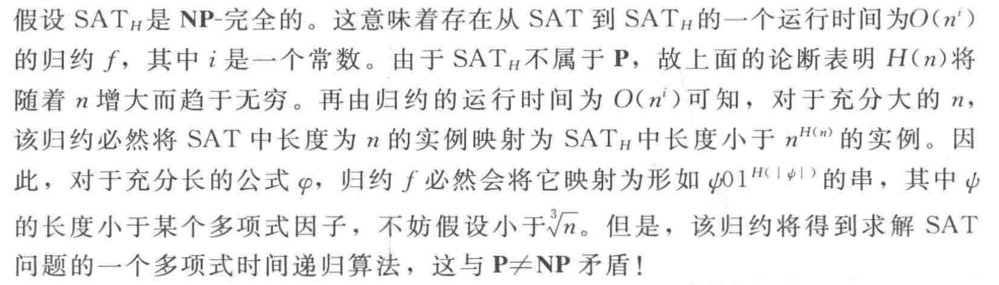

《计算复杂性》 第1次理论作业
南京大学计算机学院 张奕斐 231250022
2.14
首先证明库克规约（Cook reduction）的传递性。假设我们有以下两种Cook归约关系： \(L_1 \leq_{C} L_2\)：存在一个图灵机 \(M_1\) 在给定 \(L_2\) 的预言机时可以决定 \(L_1\)；\(L_2 \leq_{C} L_3\)：存在一个图灵机 \(M_2\) 在给定 \(L_3\) 的预言机时可以决定 \(L_2\)。
构造一个新的图灵机 \(M_3\)：\(M_3\) 接收到一个输入 \(x\) 并被要求决定 \(x\) 是否属于 \(L_1\) 时，模拟 \(M_1\) 处理这个输入的过程。每当 \(M_1\) 需要查询 \(L_2\) 的预言机时，\(M_3\) 使用 \(M_2\) 和 \(L_3\) 的预言机来间接回答这个问题。每当 \(M_1\) 查询 \(L_2\) 时，\(M_3\) 将该查询转换为对 \(M_2\) 的调用，并将 \(L_3\) 的预言机提供给 \(M_2\) 作为辅助。这样，\(M_2\) 可以利用 \(L_3\) 的预言机来回答 \(M_1\) 对 \(L_2\) 的查询。
由于 \(M_1\) 和 \(M_2\) 都在多项式时间内运行，而每次 \(M_1\) 对 \(L_2\) 的查询都被 \(M_2\) 使用 \(L_3\) 的预言机在多项式时间内解决，因此整个过程对于 \(M_3\) 来说也是多项式时间内的。于是证明了Cook归约的传递性。
下面证明3SAT问题可以库克归约到TAUTOLOGY问题。
给定一个3SAT实例 \(\phi\)，我们首先构造\(\psi = \neg\phi\)。设计一个图灵机 \(M\)，该机器接受 \(\phi\) 作为输入，并构造出 \(\psi\)。然后，\(M\) 使用 TAUTOLOGY 的预言机来检查 \(\psi\) 是否是一个重言式。这一步骤通过查询 TAUTOLOGY 预言机完成。如果 TAUTOLOGY 预言机返回 true，这意味着 \(\psi\) 是一个永真式，因此 \(\phi\) 不可满足；如果 TAUTOLOGY 预言机返回 false，则说明 \(\psi\) 不是永真式，因此存在至少一种赋值使 \(\phi\) 为真，即 \(\phi\) 可满足。因此 \(3SAT \leq_{C} TAUTOLOGY\)。
2.16
首先，我们需要证明这个问题属于NP类。考虑如下多项式时间算法：对于任何给定的顶点子集S，我们可以在多项式时间内验证是否满足条件，即计算有多少条边的一个端点在S中而另一个不在S中，并检查这个数目是否至少为K。
输入 \( x \)：图 \( G = (V, E) \) 的编码：顶点集 \( V \) ，边集 \( E \) ；整数 \( K \) ，即给定序对$
算法输出1当且仅当 \( | \{ (u, v) \in E : u \in S, v \notin S \} | \geq K \) ， $ < G, K > \in MAX-CUT$当且仅当存在位串 \( u \) 使得 \(M(<G, K>, u) = 1\)，进而 $ MAX-CUT \in NP\(。u 中 k 个顶点构成的G的独立集时\)
参考书第39页给出的NP-完全问题的规约网络，我们需要将\(VERTEX-COVER\)问题归约到\(MAX-CUT\)问题。
\(VERTEX-COVER\)问题被描述为给定一个无向图 \(G = (V, E)\) 和整数 \(K\)，判断是否存在一个顶点子集 \(S \subseteq V\)，使得 \(|S| \leq K\) 且 \(G\) 中任意边均至少有一个顶点属于 \(S\)。
给定\(VERTEX-COVER\)实例 \( (G, K) \)，构造\(MAX-CUT\)实例 \( (G', K') \)。其中图\( G' \)的顶点集 \( V' = V \cup \{a, b\} \)（添加两个新顶点 \( a \) 和 \( b \)）。边集 \( E' \) 包含：原图 \( G \) 的所有边，边 \( (a, b) \)；对每个 \( v \in V \)，添加边 \( (a, v) \) 和 \( (b, v) \)。又设 \( K' = |E| + 2|V| - K + 1 \)。
则\( G \) 存在大小 \( \leq K \) 的顶点覆盖问题可以视为\( G' \) 存在大小 \( \geq K' \) 的切割问题的求解。
通过上述归约，若\(VERTEX-COVER\)存在解，则\(MAX-CUT\)对应实例亦有解，因此其也为NP-难的。
综上所述，\(MAX-CUT\)问题是NP完全的。
2.33
给定一个量化公式 \(\psi\) 形式如下：
决定是否存在一个 \(x\) 的赋值，使得对于所有 \(y\) 的赋值，\(\phi(x,y)\) 都为真。
如果我们假设 \(P = NP\)，这意味着任何可以在非确定性多项式时间内解决的问题也可以在确定性多项式时间内解决。特别地， SAT 问题属于 \(P\) 类。
对于每一个 \(x\) 赋值，我们需要检查是否对所有的 \(y\) 赋值都有 \(\phi(x,y) = 1\)。然而，由于 \(P = NP\)，我们知道检查一个特定的 \(x\) 和 \(y\) 组合是否满足 \(\phi(x,y)\) 可以在多项式时间内完成。进一步地，因为 \(y\) 的长度是固定的 \(m\)，我们可以将这个问题视为一个子问题，即对给定的 \(x\)，找到是否存在某个 \(y\) 使得 \(\phi(x,y) = 0\)。这是一个 SAT 问题的实例，因此根据 \(P = NP\)，它可以在多项式时间内解决。如果对于某个 \(x\)，找不到使 \(\phi(x,y) = 0\) 的 \(y\)，则说明这个 \(x\) 就是我们寻找的存在解；由于假设\(P = NP\)，同样也可以在多项式时间内确定是否存在\(x\)，因为如果 \(x\) 存在解，依据如上论断我们可以在多项式时间内检验答案的正确性，而基于假设 \(P = NP\)这也意味着问题属于 \(P\) 类。
3.3
为了证明存在一个语言 \( B \in \text{EXP} \) 使得 \( \text{NP}^B \ne \text{P}^B \)，我们可以使用对角线方法。
定义 \( B \) 为所有二进制串 \( x \) 的集合，其中 \( x \) 编码了一个图灵机 \( M_x \) 和输入长度 \( n \)，且满足以下条件： 如果 \( M_x \) 在 \( n \) 步内接受 \( x \) 并且 \( x \in \text{P}^B \)，则 \( x \notin B \)。如果 \( M_x \) 在 \( n \) 步内拒绝 \( x \) 或者 \( x \notin \text{P}^B \)，则 \( x \in B \)。
由于我们可以通过模拟图灵机 \( M_x \) 最多运行 \( 2^n \) 步来决定是否 \( x \in B \)，因此 \( B \) 可以在指数时间内决定，所以 \( B \in \text{EXP} \)。
假设存在一个图灵机 \( N \) 能够在多项式时间内决定 \( B \)，即 \( N \in \text{P}^B \)。那么根据 \( B \) 的定义，对于编码了 \( N \) 自身的输入 \( x \)，如果 \( N(x) = 1 \)，则 \( x \notin B \)；如果 \( N(x) = 0 \)，则 \( x \in B \)。这就导致了一个矛盾，因为这意味着 \( N \) 不能正确地决定 \( B \)。因此，没有这样的 \( N \) 存在，即 \( B \notin \text{P}^B \)。
综上所述，我们构造了一个语言 \( B \in \text{EXP} \)满足 \( \text{NP}^B \ne \text{P}^B \)。
3.6
(a) \(H(n)\) 是小于 \(\log\log n\) 的最小整数 \(i\)，使得对于所有长度不超过 \(\log n\) 的字符串 \(x\)，图灵机 \(M_i\) 能够在 \(i|x|^i\) 步内输出 \(SATH(x)\) 的结果。如果没有这样的 \(i\) 存在，则 \(H(n) = \log\log n\)。
为了证明函数 \( H(n) \) 可以在多项式时间内计算，我们设计一个递归算法。
Base Case：若 \( n \) 较小（如 \( n = 1, 2, 3, ... \)），直接返回 \( H(n) = \log \log n \)。
计算 \( \max_i = \lfloor \log \log n \rfloor - 1 \)。若 \( \log \log n < 1 \)，设 \( \max_i = 0 \)。 遍历 \( i \) 从 1 到 \( \max_i \)：对于每个 \( x \in \{0,1\}^* \) 且 \( |x| \leq \log n \)；验证所有长度 \( \leq \log n \) 的字符串 \( x \)，检查 \( M_i \) 的输出是否与 \( \text{SATH}(x) \) 一致。
模拟机器 \( M_i \)：运行 \( M_i \) \( i|x|^i \) 步。尝试将 \( x \) 分解为 \( \psi 0 1^k \)，其中 \( k = |\psi|^{H(|\psi|)} \)。若分解失败，\( \text{SATH}(x) = 0 \)。若分解成功，递归计算 \( H(|\psi|) \)，验证 \( k = |\psi|^{H(|\psi|)} \)。若有效且 \( \psi \in \text{SAT} \)，则 \( \text{SATH}(x) = 1 \)，否则为 0。若 \( M_i(x) \neq \text{SATH}(x) \)，标记 \( i \) 无效，处理下一个 \( i \)。若所有 \( x \) 均通过验证，则 \( H(n) = i \)。 若遍历完所有 \( i \) 未找到有效解，则 \( H(n) = \lfloor \log \log n \rfloor \)。
于是时间复杂度为 [ T(n)\le \sum_{k = 1}^{log n} T(k) + \sum_{k = 1}^{log n} \sum_{x} 2^{k} + \sum_{i = 1}^{loglogn} \sum_{k = 1}^{log n}\sum_{x}ik^{i} ] 于是有\( T(n) = O(n^3) \)，函数H是可以在多项式时间内计算的。
(b)按照原书证明思路，简述如下：

要证明如果SATH是NP完全的，则SAT∈P，我们可以设计一个多项式时间的递归算法如下：
对于长度为n的布尔公式\(ϕ\)作为输入， Base Case：若n ≤ 2，直接暴力判断\(ϕ\)是否可满足，返回结果。 应用从SAT到SATH的多项式时间归约f，得到\( f(ϕ) = ψ01^{m} \)，其中ψ的长度为k,由上述过程假设，\( k \le \sqrt[3]{n} \)，递归调用自身求解ψ的可满足性，即求解SAT(ψ)。ψ∈SAT当且仅当ϕ∈SAT，故返回递归结果。
设归约f的时间为\(O(n^c)\)，递归调用的问题规模\(k ≤ n^{1/3}\)。递归深度d满足\(n^{1/3^d} ≤ 2，d = O(log log n)\)。总时间\( T(n) = O(n^c) + T(n^{1/3}) \)，展开得： [ T(n) = O(n^c) + O(n^{c/3}) + O(n^{c/9}) + \cdots = O(n^c) ] 总时间复杂度为多项式。
归约的正确性保证\( ϕ∈SAT ⇨ ψ∈SATH ⇨ ψ∈SAT \)。每次递归将问题规模降至∛n，最终在基础情况正确解决。
若SATH是NP完全的，则上述算法在多项式时间内求解SAT，故\(SAT∈P\)，与\(P≠NP\)矛盾。
3.9
我们对于每个字符串 \( w \in \{0,1\}^* \) 独立地以概率 \( 1/2 \) 被包含在 \( C \) 中的情况，定义语言 \( L_C = \{1^n \mid C \text{ 中存在长度为 } n \text{ 的字符串}\} \)，有\( L_C \in \mathbf{NP}^C \)。
假设存在多项式时间机器 \( M_i \)（运行时间为 \( n^{k_i} \)），试图判定 \( L_C \)。对每个输入 \( 1^n \)，\( M_i \) 会查询 \( C \) 中至多 \( p(n) \) 个字符串。由于 \( C \) 是随机的，这些查询成功的概率为 \( 1/2 \) 。
对于足够大的 \( n \)，\( C \) 中存在长度为 \( n \) 的字符串的概率为 \( 1 - 2^{-2^n} \approx 1 \)。但 \( M_i \) 只能查询 \( p(n) \) 个字符串，小于所有 \( 2^n \) 个可能字符串。因此，\( M_i \) 无法覆盖所有可能性。
若 \( C \) 中存在长度为 \( n \) 的字符串，但 \( M_i(1^n) \) 错误地拒绝，概率为 \( 1 - \frac{p(n)}{2 ^ n} \)。
则随着多项式时间机器 \( M_i \) 的数量增加，\( M_i(1^n) \) 错误地的概率体现为 \( 1 - (1 - p) ^ n \)，其中\( p \)表示在单个图灵机上错误的概率有\(p > 0, 1 - (1 - p) ^ n\approx 1\)。
因此，\(\mathbf{P}^C \neq \mathbf{NP}^C\) 以高概率成立。
2025.03.31